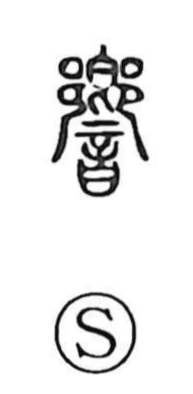

響

Uncategorized
Kun: hibiku, hibiki, oto | On: kyo
to resound ・ echo ・ reverberation ・ sound
Explanation
A phono-semantic character: 音 supplies the sense of “sound,” while 郷/鄕 marks the on reading kyo. In its older form 鄕 shows two people seated facing one another with a brimming food vessel placed between them—an image that underlies 饗, “banquet,” and conveys the idea of facing across. From this scene comes the nuance of sound answering from the opposite side: a resounding, an echo, a reverberation.